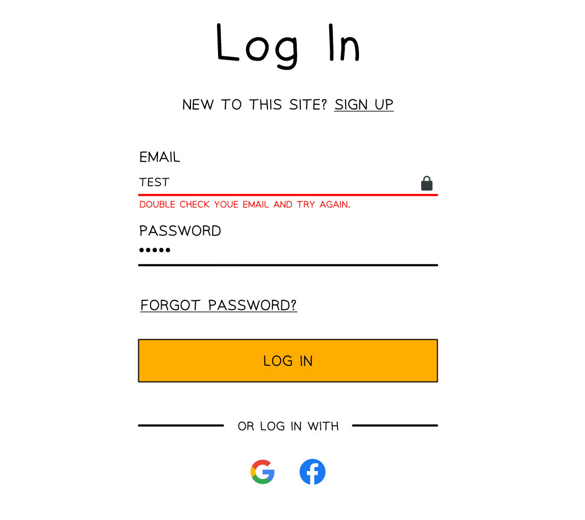

Integrity Methods
Validation & verification
What is validation?
- Validation is an automated process where a computer checks if a user input is sensible and meets the program’s requirements
- There are seven categories of validation which can be carried out on fields and data types, these are
- Range check
- Format check
- Length check
- Presence check
- Existence check
- Limit check
- Check digit
- There can be occasions where more than one type of validation will be used on a field
- An example of this could be a password field which could have a length, presence and type check on it

What is verification?
- Verification is the act of checking data is accurate when being transferred or entered into a system
- Verification methods include:
- Parity check (transfer)
- Checksum (transfer)
- Double entry checking (entry)
- Visual checks (entry)
Validation methods
| Validation type | Definition | Example |
|---|---|---|
| Range check | Ensures a number falls within a set range | Validating that a percentage is between 0 and 100 |
| Limit check | Checks that a value does not exceed a maximum limit | Ensuring no more than 5 items can be bought in a special offer |
| Length check | Checks the length of a string | Confirming a PIN is exactly 4 digits long |
| Type check | Checks that the input is of the correct data type | Ensuring age is entered as a whole number |
| Presence check | Checks that data has been entered and the field is not blank | Making sure a registration form is not submitted with blank fields |
| Existence check | Checks that a referenced value exists in a database or list | Confirming a student ID entered exists in the school records |
| Format check | Ensures data is in the correct format (e.g. patterns) | Making sure an email address contains ‘@’ and a domain like ‘.com’ |
What is a check digit?
- A check digit is the last digit included in a code or sequence, used to detect errors in numeric data entry
- Examples of errors that a check digit can help to identify are:
- Incorrect digits entered
- Omitted or extra digits
- Phonetic errors
- Added to the end of a numerical sequence they ensure validity of the data
- Calculated using standardised algorithms to ensure widespread compatibility
- Examples of where check digits can be used include:
- ISBN book numbers
- Barcodes
ISBN book numbers
- Each book has a unique ISBN number that identifies the book
- A standard ISBN number may be ten digits, for example, 965-448-765-9
- The check digit value is the final digit (9 in this example).
- This number is chosen specifically so that when the algorithm is completed the result is a whole number (an integer) with no remainder parts
- A check digit algorithm is performed on the ISBN number and if the result is a whole number, then the ISBN is valid
Barcodes
- Barcodes consist of black and white lines which can be scanned using barcode scanners
- Barcode scanners shine a laser on the black and white lines which reflect light into the scanner
- The scanner reads the distance between these lines as numbers and can identify the item
- Barcodes also use a set of digits to uniquely identify each item
- The final digit on a barcode is usually the check digit, this can be used to validate and authenticate an item
Verification methods
What is a parity check?
- A parity check determines whether bits in a transmission have been corrupted
- Every byte transmitted has one of its bits allocated as a parity bit
- The sender and receiver must agree before transmission whether they are using odd or even parity
- If odd parity is used then there must be an odd number of 1’s in the byte, including the parity bit
- If even parity is used then there must be an even number of 1’s in the byte, including the parity bit
- The value of the parity bit is determined by counting the number of 1’s in the byte, including the parity bit
- If the number of 1’s does not match the agreed parity then an error has occurred
- Parity checks only check that an error has occurred, they do not reveal where the error(s) occurred
Even parity
- Below is an arbitrary binary string
| EVEN Parity bit |
Byte | ||||||
|---|---|---|---|---|---|---|---|
| 0 | 1 | 0 | 1 | 1 | 0 | 1 | 0 |
- If an even parity bit is used then all bits in the byte, including the parity bit, must add up to an even number
- There are four 1’s in the byte
- This means the parity bit must be 0 otherwise the whole byte, including the parity bit, would add up to five which is an odd number
Odd parity
- Below is an arbitrary binary string
| ODD Parity bit |
Byte | ||||||
|---|---|---|---|---|---|---|---|
| 1 | 1 | 0 | 1 | 1 | 0 | 1 | 0 |
- If an odd parity bit is used then all bits in the byte, including the parity bit, must add up to an odd number
- There are four 1’s in the byte. This means the parity bit must be a 1 otherwise the whole byte, including the parity bit, would add up to four which is an even number
- The table below shows a number of examples of the agreed parity between a sender and receiver and the parity bit used for each byte
| Example # | Agreed parity | Parity bit | Main bit string | Total number of 1’s | ||||||
|---|---|---|---|---|---|---|---|---|---|---|
| #1 | ODD | 0 | 1 | 1 | 0 | 1 | 0 | 1 | 1 | 5 |
| #2 | EVEN | 1 | 0 | 0 | 0 | 1 | 0 | 0 | 0 | 2 |
| #3 | EVEN | 1 | 0 | 1 | 0 | 1 | 1 | 1 | 1 | 6 |
| #4 | ODD | 1 | 0 | 1 | 1 | 1 | 0 | 0 | 1 | 5 |
| #5 | ODD | 1 | 1 | 0 | 1 | 0 | 1 | 0 | 1 | 5 |
| #6 | EVEN | 0 | 1 | 0 | 0 | 1 | 1 | 1 | 0 | 4 |
- Example #1: The agreed parity is odd. All of the 1’s in the main bit string are added (5). As this number is odd already the parity bit is set to 0 so the whole byte stays odd
- Example #2: The agreed parity is even. All of the 1’s in the main bit string are added (1). As this number is odd the parity bit is set to 1 to make the total number of 1’s even (2)
- Example #6: The agreed parity is even. All of the 1’s in the main bit string are added (4). As this number is even already the parity bit is set to 0 so the whole byte stays even
- When using parity bits, an error occurs when the number of total bits does not match the agreed parity
- Bits can be flipped or changed due to interference on a wire or wirelessly due to weather or other signals
| Example # | Agreed parity | Parity bit | Main bit string | Total number of 1’s | Error | ||||||
|---|---|---|---|---|---|---|---|---|---|---|---|
| #1 | ODD | 1 | 1 | 1 | 0 | 1 | 0 | 1 | 1 | 6 | Error |
| #2 | EVEN | 1 | 0 | 0 | 0 | 1 | 0 | 0 | 0 | 2 | No error |
| #3 | EVEN | 1 | 0 | 1 | 1 | 1 | 1 | 1 | 1 | 7 | Error |
| #4 | ODD | 1 | 0 | 1 | 1 | 1 | 0 | 0 | 1 | 5 | No error |
| #5 | ODD | 1 | 1 | 0 | 1 | 0 | 1 | 1 | 1 | 6 | Error |
| #6 | EVEN | 0 | 1 | 0 | 0 | 0 | 1 | 1 | 0 | 3 | Error |
- Parity checks are quick and easy to implement but fail to detect bit swaps that cause the parity to remain the same
What are parity byte & block checks?
- Parity blocks and parity bytes can be used to check an error has occurred and where the error is located
- Parity checks on their own do not pinpoint where errors in data exist, only that an error has occurred
- A parity block consists of a block of data with the number of 1’s totalled horizontally and vertically
- A parity byte is also sent with the data which contains the parity bits from the vertical parity calculation
- Below is a parity block with a parity byte at the bottom and a parity bit column in the second column
| ODD | Parity bit | Bit 2 | Bit 3 | Bit 4 | Bit 5 | Bit 6 | Bit 7 | Bit 8 |
|---|---|---|---|---|---|---|---|---|
| Byte 1 | 0 | 1 | 1 | 0 | 1 | 0 | 1 | 1 |
| Byte 2 | 0 | 0 | 0 | 0 | 1 | 0 | 0 | 0 |
| Byte 3 | 1 | 0 | 1 | 0 | 1 | 1 | 1 | 1 |
| Byte 4 | 1 | 0 | 1 | 1 | 1 | 0 | 0 | 1 |
| Byte 5 | 1 | 1 | 0 | 1 | 0 | 1 | 0 | 1 |
| Byte 6 | 1 | 1 | 0 | 0 | 1 | 1 | 1 | 0 |
| Byte 7 | 0 | 0 | 1 | 1 | 1 | 1 | 1 | 0 |
| Byte 8 | 0 | 1 | 0 | 1 | 1 | 0 | 0 | 0 |
| Parity byte | 0 | 1 | 1 | 1 | 1 | 1 | 1 | 1 |
- The above table uses odd parity
- Each byte row calculates the horizontal parity as a parity bit as normal
- Each bit column calculates the vertical parity for each row, the parity byte
- It is calculated before transmission and sent with the parity block
- Each parity bit tracks if a flip error occurred in a byte while the parity byte calculates if an error occurred in a bit column
- By cross referencing both horizontal and vertical parity values the error can be pinpointed
- In the above example the byte 3 / bit 5 cell is the error and should be a 0 instead
- The error could be fixed automatically or a retransmission request could be sent to the sender
What is a checksum?
- A checksum is a value that can be used to determine if data has been corrupted or altered
- It indicates whether data differs from its original form but does not specify where
- Checksums are calculated using an algorithm and the value is added to the transmission
- The receiving device re-calculates the checksum and compares to the original
- If the checksums do not match, it is assumed an error has occurred
What is double entry checking?
- Double entry checking involves entering the data twice in separate input boxes and then comparing the data to ensure they both match
- If they do not, an error message is shown
What is a visual check?
- A visual check involves the user visually checking the data on the screen
- A popup or message then asks if the data is correct before proceeding
- If it isn’t the user then enters the data again